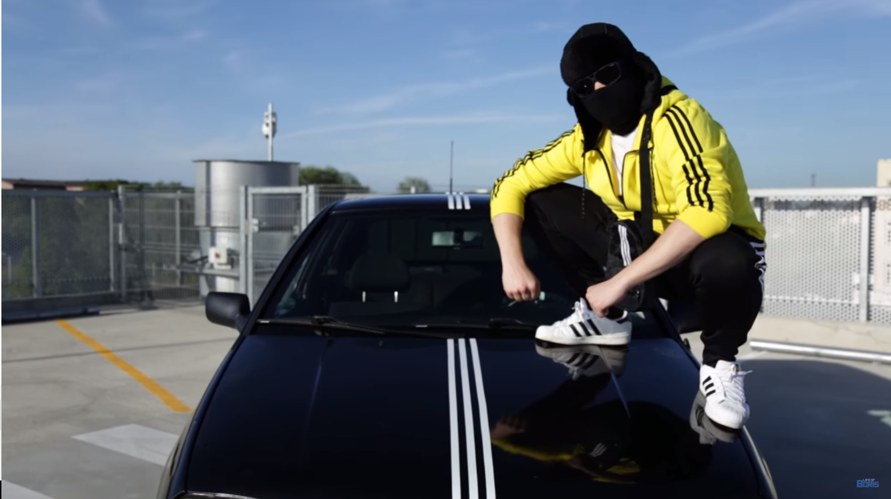

Here are some facts about him:
- Toilet destruction means a lot to him
- Youtube demonitized a lot of his videos because of a stupid advertising policy
- He may live somewhere in Estonia
- He just recently bought a new car, a Mercedes
- His beloved kakadu got replaced by Tiny Boris
- As of November 7th, he is at 1.8 million subscribers
- He squats like a boss
- He visited my home city in the summer for his vacation
- He visited Berlin to celebrate the smashing success of his song "Slav King" a year ago
- He loves to cook and eat semechki
- Nobody is better at him with the whole cheeki breeki thing!